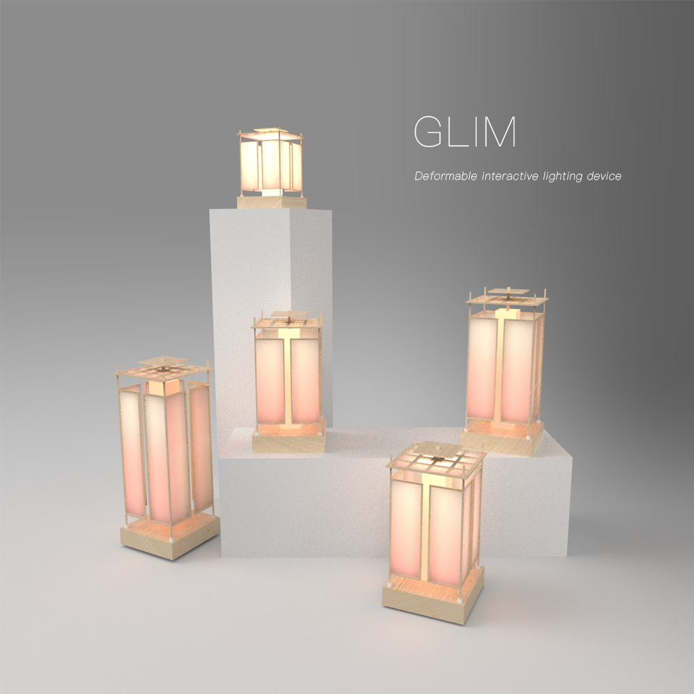
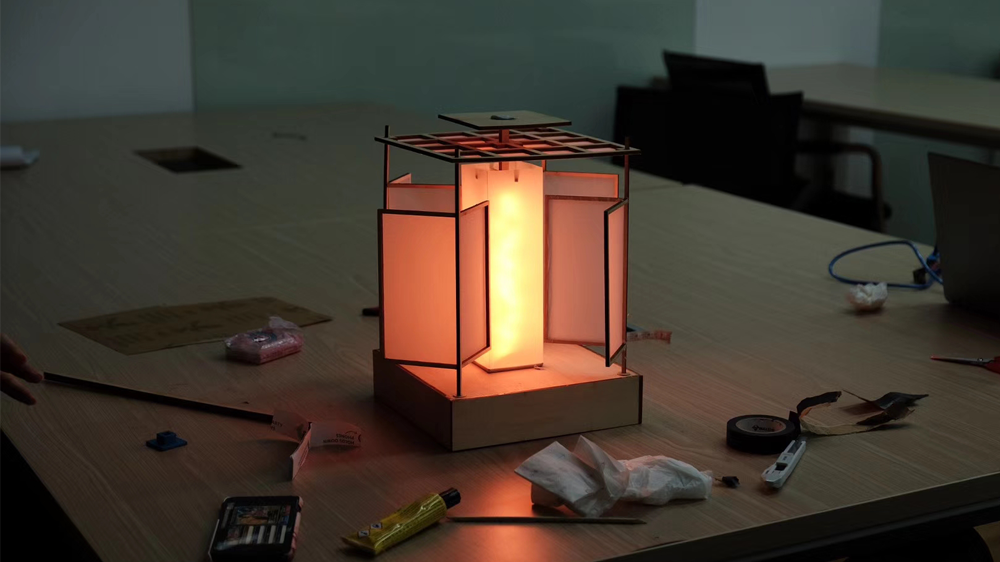
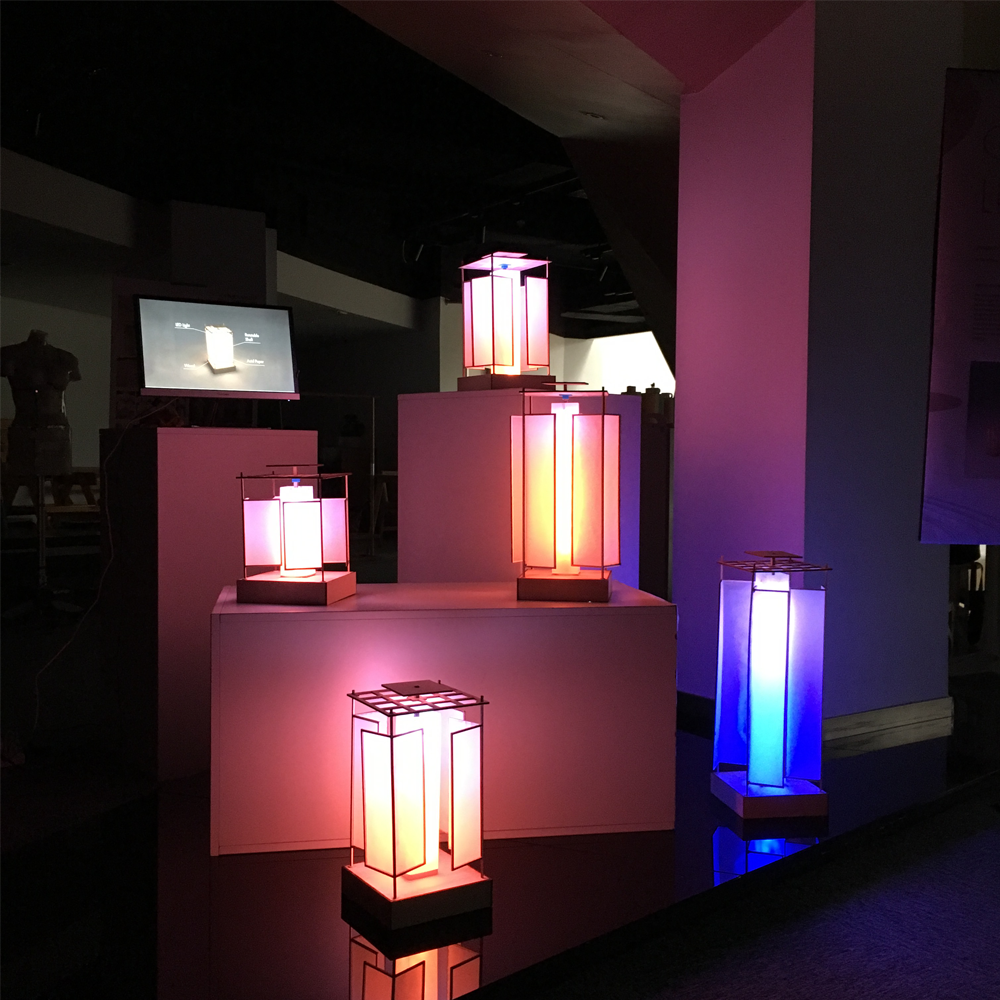

- 
2017 | Glim
-
装置设计 ：蔡光锡 / 高天 / 林莹 / 叶玮
程序 ：杨可奥
-
灵感来源
数千年来，在东亚大部分地区，灯笼和音乐一直在夜晚点亮。 春节期间，伴随着音乐的红灯笼让人们感到狂喜。 在令人心碎的葬礼中，伴随着音乐的白色灯笼映射着人们面对死亡的悲痛。
技术工具的出现为现代灯笼设计的创新提供了重要的空间。 我们的灵感源于传统灯笼的使用，将其重新配置功能后，可在各种环境下响应日常的音乐。
For thousands of years, lanterns along with music have illuminated every night in most of East Asia. During Spring Festival, the red lantern with music sets off the ecstasy among individuals. During heartbreaking funeral, the white lantern with music reflects people’s grief for the dead.
Advent of technological tools presents significant scope for creative innovation in design of modern lanterns. Our inspiration stems from the traditional use of lanterns with reconfiguring features that responds to music for everyday use under variety of settings.

Glim是一款受灯笼启发的、实时响应音乐的灯光装置。 它采用中国传统灯笼的形状，框架和基座平台由木材制成，四周被硫酸纸包围。
Glim的独特之处在于，当播放音乐时，其结构会随着正在播放的音乐的振幅响度而变换颜色。 随着音量的增加，除了改变颜色之外，其结构还会按比例张开，让更多的光散射出来。
Glim允许多个灯笼无线连接在一起，以产生鲜艳的色彩和照明效果。
Glim is a lantern inspired reconfiguring light installation that responds to music. Glim takes the shape of a traditional Chinese lantern, with the frame and base platform made of wood, fully surrounded by sulphate paper.
The unique feature of Glim is that when music is played, its structure opens up with increasing color brightness in response to amplitude of the music being played. With any increase in volume, the structure opens up proportionally letting more light to scatter in addition to increasing color brightness.
Glim allows for multiple lanterns to be connected together wirelessly to generate vibrant colors and illumination effects.
- 
- 